Introdução à modelação no Blender
Definição
De uma forma simples, a modelação pode ser entendida como o processo de definição da forma de um objeto através da manipulação da sua geometria.
Tipos de modelação
Um modelo 3D é uma representação matemática de superfícies tridimensionais. Esta representação pode ser criada manualmente ou automaticamente. Atualmente, estas são as três formas mais comuns de modelar:
Polygonal modeling (Modelação poligonal): pontos/vértices, ligados entre si através de linhas/arestas, delimitam faces formando uma malha poligonal. Atualmente, a grande maioria dos modelos 3D é construída com recurso a modelos poligonais texturizados. No entanto, os polígonos são planos, só conseguem representar superfícies curvas através do recurso a muitos polígonos.
Curve modeling (Modelação de curvas): As superfícies são definidos por curvas que são manipuladas através de pontos de controle, a curva segue os pontos. Existem diferentes tipos de curvas, incluindo NURBS.
Digital sculpting: Método relativamente recente. Existem atualmente três subtipos: Displacement, Volumetric, Dynamic tesselation.
Técnicas de modelação
Box/Subdivision Modeling: Técnica de modelação poligonal que utiliza preferencialmente a ferramenta Subdivide. O modelador começa com uma forma simples, frequentemente um cubo ou outro objecto geométrico primitivo (cilindro, esfera, etc.), e vai subdividindo, refinando, moldando o objecto. É, provavelmente, a forma mais comum de modelação poligonal e é frequentemente utilizada em conjunto com outras técnicas de modelação.
 Imagem publicada em Southern, G. (agosto, 2011). Boxing Clever. 3D World, p.83.
Imagem publicada em Southern, G. (agosto, 2011). Boxing Clever. 3D World, p.83.
Edge Modeling (também designada por "contour modeling", "point by point" ou "poly-by-poly"): Técnica de modelação poligonal em que o modelador cria o contorno do objecto (geralmente, a partir de uma imagem de referência) e, depois, começa a dar volume ao objecto. Ao invés de começar com uma forma primitiva (como no box modeling), o modelo é essencialmente construído polígono a polígono, colocando faces ao longo dos contornos salientes e, depois, preenchendo o espaço entre estes. Especialmente indicada quando é necessária maior precisão e melhor topologia (por exemplo, na modelação de rostos).
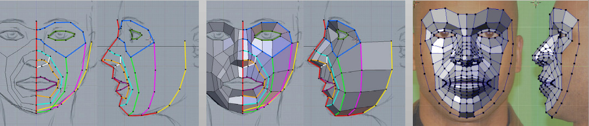
NURBS Modeling (ou Spline Modeling): Técnica de modelação muito comum para fins industriais. Os objectos do tipo NURBS (Nonuniform rational B-spline) não são poligonais, não possuem faces, arestas ou vértices. NURBS é um modelo matemático para criar e representar curvas e superfícies.
Digital Sculpting: Técnica de modelação que permite criar modelos 3D de uma forma muito intuitiva, semelhante à modelação de argila, barro ou plasticina. Permite trabalhar com malhas de alta resolução (high-resolution meshes), com milhões de polígonos, criando níveis muito elevados de detalhe.
Procedural Modeling: Técnica não manual, criação de modelos 3D algoritmicamente respeitando as regras ou parâmetros definidos pelo utilizador. É muito utilizada na criação de ambientes e paisagens (environment modeling) ou árvores e folhagens.
Image Based Modeling: Processo de criação de objetos 3D, algoritmicamente, a partir imagens bidimensionais.
3D Scanning: Processo de digitalização de objetos do mundo real em que os dados em bruto (geralmente, uma nuvem de pontos x, y, z | "x,y,z point cloud") são utilizados para gerar uma malha poligonal ou superfícies NURBS.
Organic e Hard surface
Organic modeling: modelação de seres vivos ou que deveriam ter vida (plantas, animais, elfos, humanos, monstros, árvores, rochas, nuvens, insetos, bactérias, etc.), que naturalmente existem na natureza. Objetos com contornos suaves, sem muitas áreas geométricas e arestas claras, que se deformam.
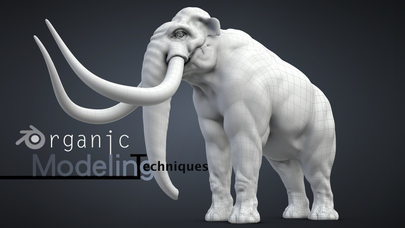 Imagem retirada de cmiVFX - Blender Organic Modeling Techniques
Hard surface modeling: modelação de objetos feitos pelo homem ou construídos (carros, tanques, canetas, lápis, helicópteros, óculos de sol, estruturas arquitetónicas, veículos, máquinas, etc.). Objetos com arestas claras, não se deformam.
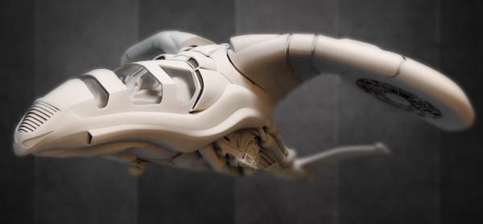 Imagem retirada de Blender Cookie - Vehicle Series: Production Complete / End of Pre-orders
Alguns termos e conceitos importantes
Objects: Uma cena é composta por um ou mais objetos. Nem todos os objetos servem para modelar. Eis os objetos mais comuns na modelação:
Mesh: Objetos compostos de Faces Poligonais, Arestas e / ou Vértices.
Curves: Curvas são objetos definidos matematicamente que podem ser manipulados com alças ou pontos de controle.
Surfaces: Superfícies também são manipuladas com pontos de controle. Muito úteis para formas simples mas muito orgânicas e arredondadas.
Meta Objects: Metaballs são objetos formados por uma função que define o volume 3D em que o objeto existe.
Text: Objetos de texto, representação 2D de uma sequência de caracteres. Empty: são objectos sem geometria, não renderizam, mas são extremanente úteis para controlar a posição e movimento e outros objectos.
Object e Edit Mode: São os dois modos de trabalho essenciais. Em Object Mode, as operações aplicam-se à totalidade de um objecto (por exemplo, desloca o cubo). Em Edit Mode, as operações aplicam-se à malha que define o objecto (por exemplo, desloca um vértice do cubo). Os objetos numa cena estão todos em Object Mode e só um de cada vez em Edit Mode.
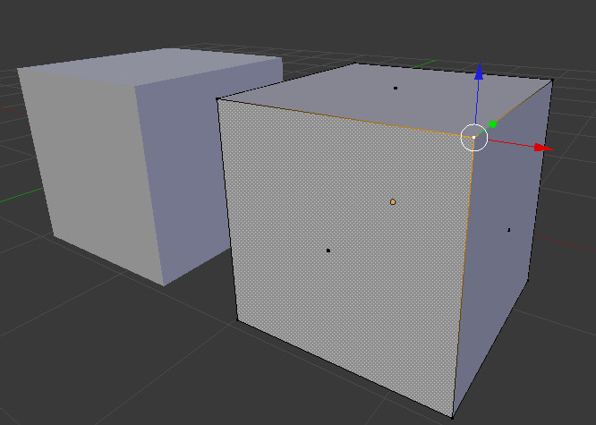
Topology: está relacionada com a estrutura da malha, a forma como a malha flui ao redor da superfície e atribui detalhes ao modelo. É o layout de um modelo 3D, o modo como os vértices e as arestas são posicionados para criar a superfície de malha (mesh). Uma boa topologia, limpa e eficaz, é essencial para framerates rápidos (em tempo real) e boas deformações (tempo real e pré-rendered).
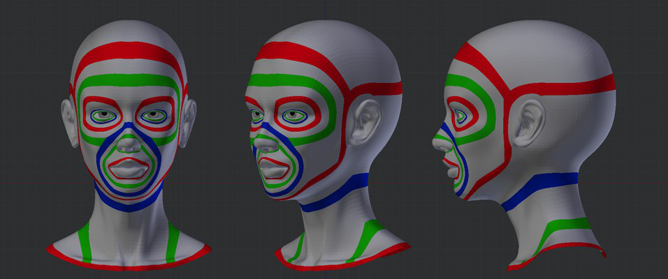 Imagem retirada de Blender Cookie - Learning Mesh Topology Collection
Algumas ferramentas comuns
Extrusion: Extrusão é uma ferramenta essencial de modelação. Permite criar nova malha a partir da malha existente. Projeta faces, arestas ou vértices com o mesmo tamanho e forma dos selecionados. Por exemplo, extrusão sobre uma face quadrada criaria um cubo, etc.
 Diferença entre Extrude Individual e Extrude Region
Diferença entre Extrude Individual e Extrude Region
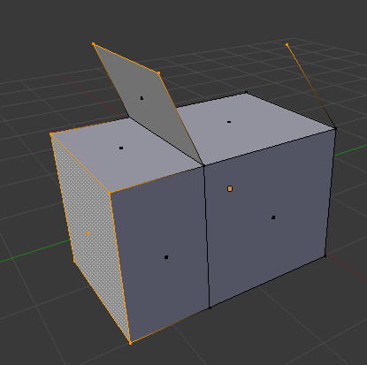 Extrusão de faces, arestas e vértices.
Subdivide: Ferramenta essencial de modelação, permite criar novas faces, arestas ou vértices através da divisão da malha já existente.
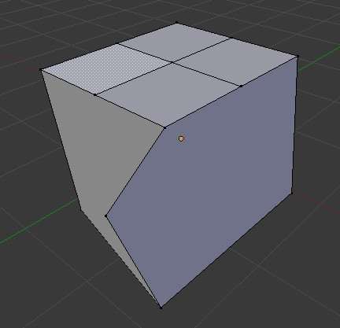
Bevels ou Chamfers: Biselar/chanfrar (cortar em bisel ou fazer chanfros) permite cortar as arestas de um objecto. Pode-se usar a ferramenta Bevel só nos vértices (em vez de arestas), com diferentes limites de ângulo, cortes diferente larguras, etc.
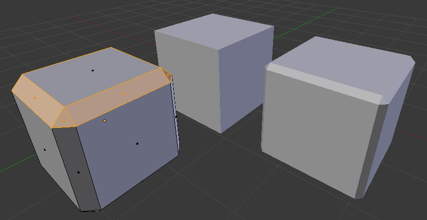
Subdivision Surface (SubSurf): Técnica descoberta em 1978 por Edwin Catmull and Jim Clark. É um método de representação de uma superfície lisa calculada através da subdivisão das faces. No Blender, é um modifier, pode ser utilizado de forma não-destrutiva.
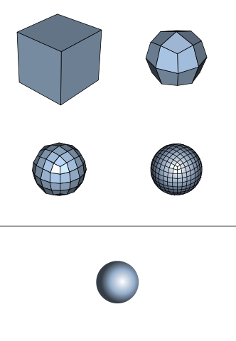 Imagem retirada da Wikipedia
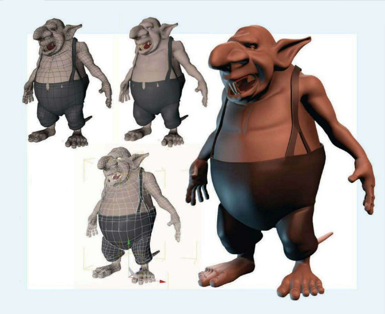 Imagem publicada em Southern, G. (setembro, 2011). Divide and conquer. 3D World, p.76.
Loops (Edge e Cuts): Edge Loop pode ser definido como um conjunto de arestas ligadas através de uma superfície. Geralmente, a última aresta está ligada à primeira, criando um loop. As Edges de um modelo devem seguir em forma de loops para que a animação de uma personagem resulte sem erros e deformações que resultam da malha entrelaçada. Loop Cuts é uma ferramenta de modelação que permite cortar um loop de faces inserindo um novo Edge Loop.

Non-Destructive Modeling e Modifiers: Modifiers são operações automáticas que afetam um objeto de um modo não-destrutivo, de forma não definitiva. Os modificadores pemitem realizar diversas operações sem afetar a topologia base do objeto, a sua geometria real. Se desejar, os Modifiers podem ser tornados definitivos, aplicados (Apply).
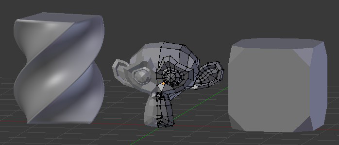 Utilização de 3 modifiers (da esq. para a dir.): Simple Deform, Mirror e Bevel
Material adicional recomendado
10 anatomy tips for 3D artists
13 expert tips for modelling 3D spaceships and space scenes
3D Animation Workshop: Lesson 52: Low-Polygon Modeling
Create 3D models for game engines: 5 pro tips
How to create a 3D monster in just 9 steps
Making A Toon Character Called “Geoff” & his Rig
Professional 3D Character Modeling Explained For Beginners
7 Common 3D Modeling Techniques for Film and Games
Polygonal 3D Modeling - Common Box and Edge Modeling Workflows